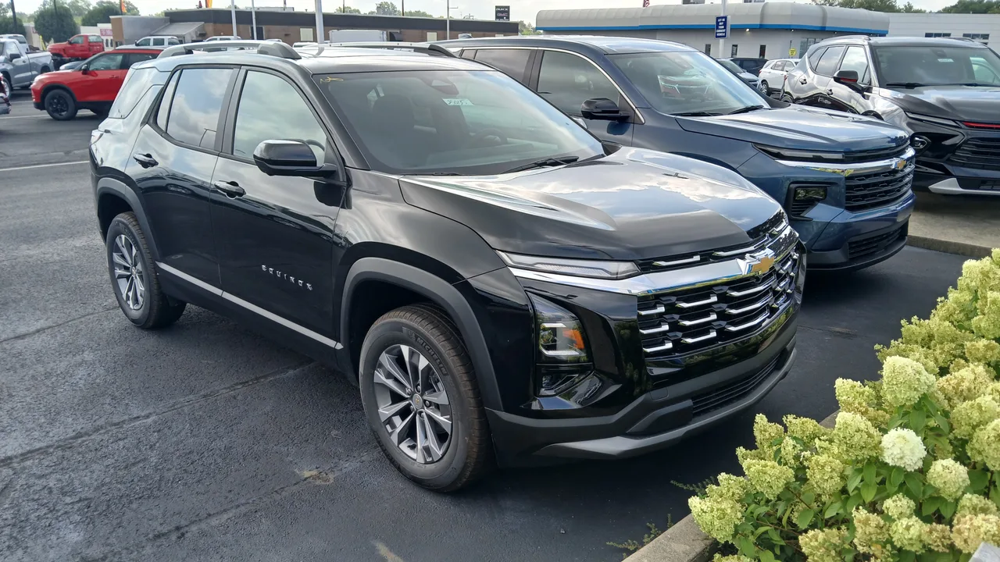

▲ 쉐보레 이쿼녹스는 차량모델등급 6등급으로, 21등급인 현대 싼타페보다 자차보험료가 약 75% 더 비싸다 ⓒ Deathpallie325, Wikimedia Commons (CC BY 4.0)
매년 자동차보험을 갱신할 때마다 "내 차는 왜 이렇게 보험료가 비쌀까"라는 의문이 든 적 있다면, 그 답은 십중팔구 '차량모델등급'에 있습니다. 실제로 GM 이쿼녹스는 차량모델등급 6등급, 현대 싼타페는 21등급으로 15계단 차이가 나는데, 이 격차만으로 자차보험료가 약 75%나 벌어집니다. 두 차 모두 비슷한 체급의 중형 SUV라는 점을 생각하면 꽤 큰 차이입니다.
1. 차량모델등급, 도대체 누가 왜 정하나
차량모델등급은 보험개발원이 매년 차종별로 산정해 발표하는 등급으로, 자동차보험 중 자기차량손해(자차) 담보의 보험료를 정하는 핵심 기준입니다. 사고가 났을 때 그 차량이 얼마나 손상되는지, 수리가 얼마나 쉬운지, 부품 가격은 어느 정도인지, 실제 손해율은 어떤지를 종합해 1등급부터 26등급까지 매깁니다. 등급 숫자가 높을수록 사고 시 손해가 적다는 뜻이라 보험료가 저렴해지고, 숫자가 낮을수록 보험료가 비싸집니다.
2. 15등급 차이가 만든 75% 격차 — 이쿼녹스 vs 싼타페

▲ 현대 싼타페는 차량모델등급 21등급으로, 같은 체급의 이쿼녹스보다 자차보험료가 훨씬 저렴하다
이 제도가 실제로 소비자 지갑에 어떤 영향을 미치는지 보여주는 대표적인 사례가 GM 이쿼녹스와 현대 싼타페입니다. 이쿼녹스는 차량모델등급 6등급, 싼타페는 21등급으로 무려 15계단이나 차이가 납니다. 등급 차이가 이 정도로 벌어지면 자차보험료 역시 약 75% 수준까지 차이가 나는 것으로 알려져 있습니다. 두 차량 모두 준중형~중형급 SUV로 체급이 비슷한데도 이런 격차가 생기는 이유는, 단순히 차량 가격이 아니라 사고 시 수리 용이성과 부품 수급성이 등급 산정에 훨씬 크게 반영되기 때문입니다.
| 모델 | 차량모델등급 | 자차보험료 체감 |
|---|---|---|
| GM 이쿼녹스 | 6등급 | 상대적으로 높음 |
| 현대 싼타페 | 21등급 | 상대적으로 낮음(이쿼녹스 대비 약 75% 저렴한 수준) |
3. 왜 수입차가 불리한가 — 부품값과 수리 기간
수입차 자차보험료가 국산차보다 대체로 높게 형성되는 이유도 같은 맥락입니다. 사고요율 자체도 영향을 주지만, 여기에 더해 수리에 걸리는 기간이 등급 산정에 반영됩니다. 수입차는 부품 조달에 시간이 걸리고 정비 인프라도 국산차만큼 촘촘하지 않은 경우가 많아, 같은 손상이라도 수리 기간이 길어지고 이는 곧 손해율 상승으로 이어집니다. 실제로 국내 수입차의 평균 기본 보험료는 약 165만 원 수준으로 국산차보다 높게 형성되는데, 가장 큰 원인으로 비싼 수리 부품비가 꼽힙니다.
4. 대중차인데 보험료는 프리미엄급 — 테슬라의 특수한 사정

▲ 테슬라는 가격대는 대중차에 가깝지만 수리비와 수리 기간이 길어 차량모델등급이 불리하게 매겨진다
테슬라는 이런 구조를 가장 잘 보여주는 사례로 자주 언급됩니다. 가격대만 놓고 보면 프리미엄 브랜드가 아니라 대중적인 포지션에 가까운데도, 실제 자차보험료는 훨씬 높게 책정되는 경우가 많습니다. 이유는 단순합니다. 사고 시 수리비 자체가 높고, 부품 조달과 공식 서비스센터를 통한 수리에 걸리는 기간도 상대적으로 깁니다. 손해보험사 입장에서는 손해율이 높은 차량으로 분류될 수밖에 없고, 이는 곧 차량모델등급 하락과 보험료 상승으로 이어집니다.
5. 내 차 등급, 직접 확인하는 방법
자신이 타는 차, 혹은 구매를 고려 중인 차의 차량모델등급은 보험개발원 홈페이지(kidi.or.kr)의 '차량등급조회' 메뉴에서 누구나 직접 확인할 수 있습니다. 바로가기 신차를 계약하기 전 이 등급을 미리 조회해보면, 매년 내야 할 자차보험료 수준을 어느 정도 가늠할 수 있습니다. 특히 비슷한 가격대의 국산차와 수입차, 혹은 동급 SUV 여러 모델을 놓고 고민 중이라면 이 등급 차이가 실질적인 유지비 격차로 이어질 수 있다는 점을 기억해둘 만합니다.
6. 구매 전 체크리스트
결국 차량모델등급은 소비자가 잘 모르는 사이 매년 내는 자차보험료를 크게 좌우하는 요소입니다. 신차를 고를 때 연비나 옵션만큼이나, 이 등급도 한 번쯤 확인해볼 가치가 있습니다.